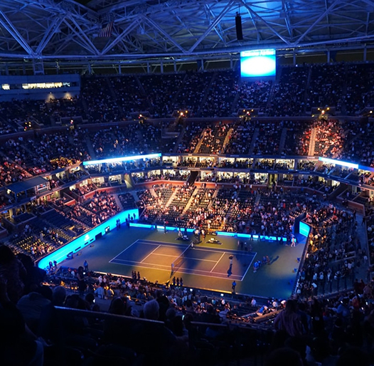

Фото кортів
Детальніше про клуб

Київський тенісний клуб “Racquet”
Київський тенісний клуб — це сучасний спортивно-оздоровчий комплекс, створений для всіх шанувальників активного способу життя, якісного сервісу та великого тенісу. Наша мета — забезпечити ідеальні умови для тренувань як досвідченим спортсменам, так і початківцям будь-якого віку. Серцем клубу є професійні майданчики трьох типів: ґрунтові корти, покриття зі штучної трави та закриті хард-корти. Завдяки наявності критих приміщень із системами опалення та клімат-контролю, гра триває цілий рік за будь-якої погоди, а сучасне освітлення гарантує відмінну видимість у будь-який час доби.
У клубі працює досвідчена команда сертифікованих тренерів, яка пропонує індивідуальні та групові програми, а також дитячу тенісну секцію. Для максимального комфорту відвідувачів передбачено зручні роздягальні, затишну зону відпочинку, прокат якісного інвентарю та сервіс із обслуговування ракеток. Окрім тренувального процесу, ми регулярно організовуємо любительські турніри та формуємо дружню клубну спільноту. На нашому сайті ви можете миттєво ознайомитися з розкладом, обрати тренера та забронювати корт онлайн у кілька кліків.
Правила
1. Загальні положення
1.1. Ці Правила регулюють порядок відвідування та користування послугами Київського тенісного клубу «Racquet» (далі, Клуб), що розташований за адресою: м. Київ, вул. Спортивна, 10.
1.2. Правила обов'язкові для всіх відвідувачів Клубу: клієнтів, власників абонементів, глядачів, учасників турнірів і зборів команд.
1.3. Здійснюючи бронювання, купуючи абонемент або перебуваючи на території Клубу, відвідувач підтверджує, що ознайомився з Правилами та погоджується їх дотримуватися.
1.4. Клуб пропонує такі послуги: оренда кортів (ґрунтові, «Хард», «Штучна трава»), послуги тренера, дитячий теніс, збори команд, прокат інвентарю, кафе.
1.5. Актуальна інформація про послуги, ціни та акції розміщена на офіційному сайті Клубу. Адміністрація має право змінювати Правила та ціни, оприлюднюючи зміни на сайті.
2. Основні визначення
- Клуб: Київський тенісний клуб «Racquet».
- Адміністрація: працівники рецепції та керівництво Клубу, уповноважені контролювати дотримання Правил.
- Відвідувач (клієнт): особа, яка перебуває на території Клубу або користується його послугами.
- Корт: тенісний майданчик із ґрунтовим покриттям, покриттям «Хард» або «Штучна трава».
- Оренда корту: послуга з надання корту на погодинній основі (1 година).
- Бронювання: попереднє резервування корту на обраний день і час через сайт чи телефон рецепції.
- Абонемент: пакет занять за фіксованою вартістю. Види: «Стандарт» (8 занять), «Безліміт» (на місяць), дитячий абонемент.
- Тренер: працівник Клубу, який проводить індивідуальні чи групові тренування.
- Інвентар: ракетки, м'ячі та інше спорядження, що надається Клубом у прокат.
3.1. ТК забезпечує Членам клубу:
- Разове відвідування.
- Абонементи з фіксованим часом.
- Абонементи на 30 и 50 годин.
- Індивідуальні заняття з тренером.
- «Клуб любителей тенниса».
- Дитячі групи різної вікової категорії и рівня підготовки.
- Дорослі групи.
3.2. Мінімальний час:
- Разове відвідування — 60 хвилин.
- Разове відвідування на літніх кортах — 55 хвилин.
- Абонементу — 30 годин.
- Індивідуальне заняття з тренером — 1 годину.
- Заняття з тренером в групах (дорослі/дитячі) — згідно з діючим розкладом.
3.3. Ігрова година згідно заявки (броні)
ТК надає ігровий час на підставі заявок (бронювання) Членів клубу з урахуванням розкладу роботи корту, проведення змагань, клубних заходів, проведення ремонтно-профілактичних робіт. Бронювання ігрового часу здійснюється через адміністратора ТК. Бронювання може здійснюватися безпосередньо в Комплексі або за телефоном.
3.4. ТК не несе відповідальності за збереження розкладу ігрового часу за Членом клубу після закінчення терміну дії абонемента, а також у разі порушення терміну оплати послуг.
3.5. Абонемент мають право купувати тільки Члени ТК. Купівля абонементів тренерами заборонена.
3.6. Скасування ігрового часу може здійснюватися не пізніше ніж за 24 години до початку заняття та відпрацьовуватися протягом сезону на рівноцінному часі або, за бажанням, на дорожчому, з доплатою. Не скасоване вчасно заняття вважається таким, що відбулося, і оплачується за поточним тарифом.
3.7. При проведенні змагань, Клубних заходів, технічних несправностях, що не дозволяють експлуатацію кортів, ТК має право вносити зміни до розкладу. При цьому ТК зобов'язується заздалегідь повідомити Члена клубу за телефоном про зміни в розкладі, а також надати можливість рівнозначно компенсувати пропущений ігровий час у зручний для Члена клубу час з урахуванням зайнятості кортів.
3.8. Компенсація (взаємно узгоджений рівноцінний ігровий час) для занять у ТК надається також у випадках:
- коли Член клубу заздалегідь (не менше ніж за добу) повідомив адміністратора ТК про неможливість відвідування заняття.
- несприятливих погодних умов для гри на відкритих кортах і неможливості надання закритого майданчика.
4. Оплата послуг
4.1. Вартість послуг визначається чинним прейскурантом, розміщеним на сайті:
- оренда ґрунтового корту: 500 грн/год;
- оренда корту «Хард»: 600 грн/год;
- оренда корту «Штучна трава»: 700 грн/год;
- абонемент «Стандарт» (8 занять): 3600 грн;
- абонемент «Безліміт» (на місяць): 7000 грн.
4.2. Оплата оренди корту здійснюється після тренування, якщо інше не передбачено умовами бронювання.
4.3. Знижки:
- студентам і школярам 15% у ранкові години (до 12:00);
- 10% при оренді корту від 3 годин поспіль.
Знижки за пунктом 4.3 не сумуються, якщо інше не визначено Адміністрацією. Для отримання знижки студентам і школярам потрібно пред'явити відповідний документ.
4.4. Після подання заявки на абонемент адміністратор зв'язується з клієнтом за вказаним номером телефону для уточнення деталей і оформлення картки членства.
4.5. Вартість послуг тренера не входить у вартість оренди корту. Її уточнює адміністратор під час підтвердження бронювання.
4.6. Абонемент є іменним і не може бути переданий третім особам. Невикористані заняття за закінченням строку дії абонемента не переносяться й не відшкодовуються (уточніть цю умову за політикою клубу).
4.7. Оплата приймається в готівковій та безготівковій формі на рецепції Клубу.
5. Правила поведінки на території та кортах
5.1. Відвідувачі зобов'язані поводитися ввічливо, поважати інших гравців, тренерів і персонал Клубу.
5.2. Грати на кортах дозволяється лише в спортивному одязі та спеціальному тенісному взутті, що відповідає типу покриття. Взуття з темною підошвою, що залишає сліди, на кортах із покриттям «Хард» і «Штучна трава» заборонене.
5.3. Користуватися кортом можна тільки в заброньований час. Приходити слід заздалегідь, щоб гра розпочалася вчасно. Час запізнення не компенсується продовженням гри.
5.4. Після завершення гри відвідувач зобов'язаний залишити корт у належному стані: зібрати м'ячі та особисті речі. На ґрунтових кортах за вказівкою персоналу потрібно вирівняти покриття.
5.5. Забороняється:
- заходити на корт без дозволу Адміністрації та поза часом бронювання;
- перебувати на корті з їжею, склянкою чи пляшками (окрім води в пластиковій пляшці);
- палити, вживати алкогольні напої та наркотичні речовини на території Клубу;
- вживати нецензурну лексику, поводитися агресивно, навмисно ламати чи кидати інвентар;
- проводити фото- та відеозйомку з комерційною метою без погодження з Адміністрацією;
- заходити з тваринами (окрім випадків, дозволених Адміністрацією).
5.6. Діти до 14 років допускаються на корти лише під наглядом тренера або одного з батьків. Відповідальність за безпеку дитини несуть батьки (законні представники).
5.7. Під час тренувань і ігор слід дотримуватися вказівок тренерів та адміністраторів, а також правил техніки безпеки.
5.8. За навмисне пошкодження майна, покриття чи інвентарю Клубу відвідувач відшкодовує завдану шкоду в повному обсязі.
5.9. Користуватися роздягальнями та зонами відпочинку слід охайно, дбаючи про чистоту. Не залишайте цінні речі без нагляду.
6. Інші положення
6.1. Клуб не несе відповідальності за втрату чи пошкодження особистих речей відвідувачів, залишених без нагляду.
6.2. Кожен відвідувач самостійно відповідає за стан власного здоров'я. Перед початком занять рекомендується переконатися у відсутності медичних протипоказань.
6.3. Адміністрація має право скасувати або перенести бронювання, якщо корт неможливо використовувати через погодні умови (для ґрунтових кортів), технічні причини чи форс-мажорні обставини. У такому разі клієнту пропонується інший час або повертаються кошти.
6.4. Адміністрація має право відмовити у відвідуванні або припинити надання послуг особі, яка порушує Правила, без відшкодування вартості послуги.
6.5. Персональні дані, які клієнт залишає під час бронювання чи оформлення абонемента (ПІБ, телефон, e-mail), використовуються лише для зв'язку та надання послуг і не передаються третім особам.
6.6. Скарги й пропозиції приймаються на рецепції за телефоном +38 (067) 000-00-00.
6.7. Питання, не врегульовані цими Правилами, вирішуються Адміністрацією відповідно до чинного законодавства України.